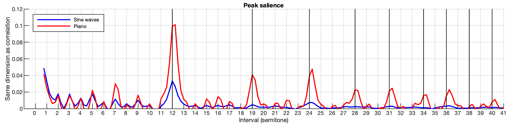
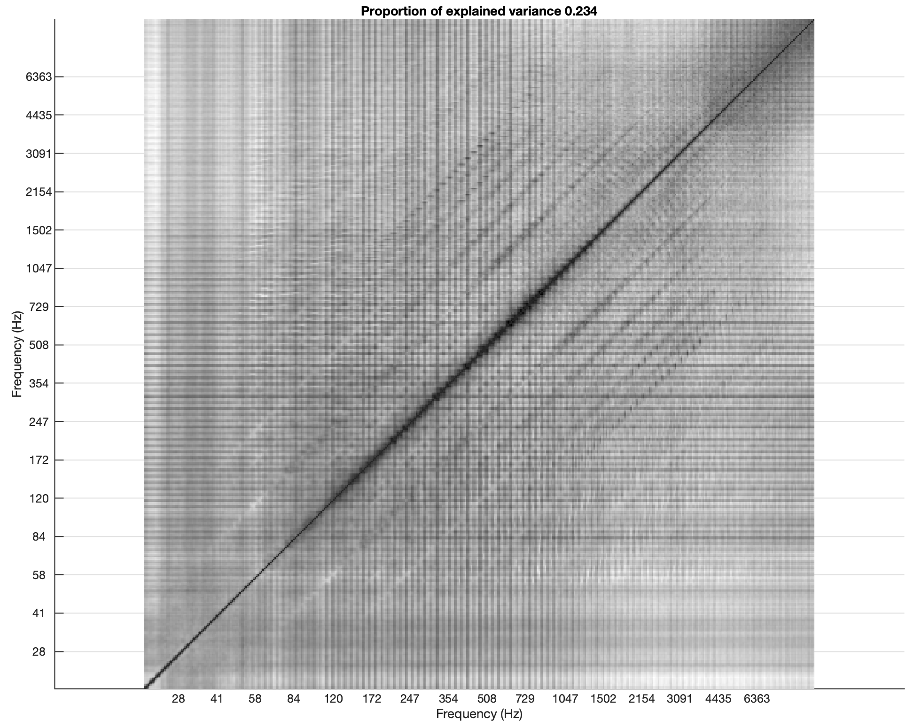
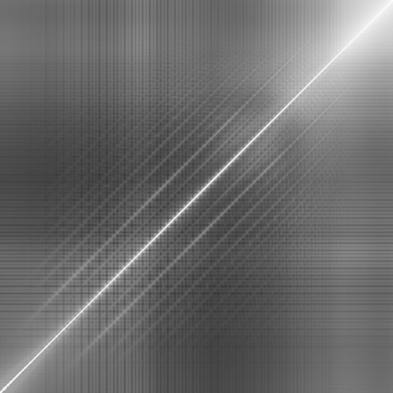
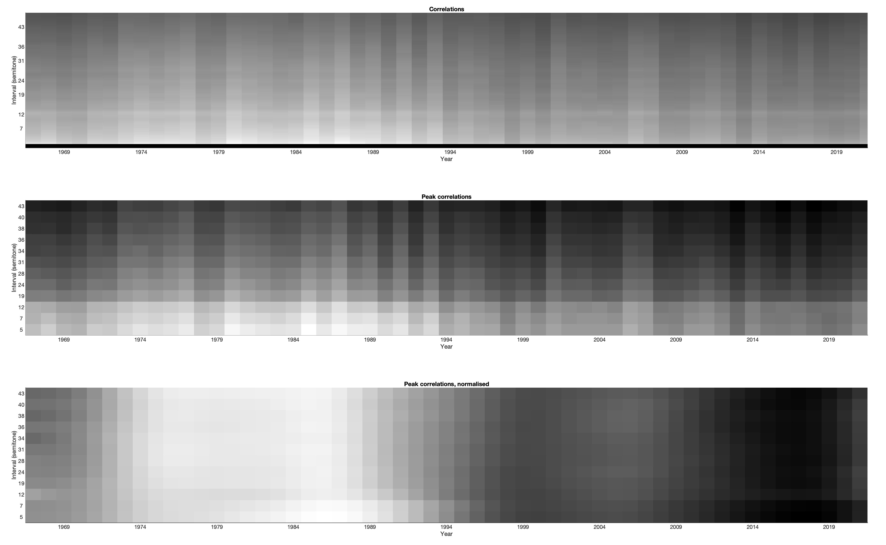

Pairwise correlations between freq bands, 2-second windows
White diagonal lines correspond to conjointly evolving bands.
The diagrams define different frequency ranges that we may be able to use later.
Notice the coarser granularity, corresponding to less 'continousness' of the self-correlated content.
Granularity is less coarse than in the case of the piano, but coarser than in the case of BEA.
Irt granularity: the representations above measure the continuity in frequency distribution, not in frequency succession.
Investigate relations with MPEG7 measure HarmonicRatio in feature AudioHarmonicity (ISO/IEC, 2001), p.44.
"HarmonicRatio is loosely defined as the proportion of harmonic components within the power spectrum. It is derived from the correlation between the signal and a lagged representation of the signal, lagged by the fundamental period of the signal. In order to avoid dependency on the actual fundamental frequency estimate, the algorithm produces its own estimate by searching for the maximum value in the normalized cross-correlation of the signal."
=> Seems to be "only" normalised cross-correlation of the signal.
Median filtering, win=10, overlap=half window.
Diagonals evaluated between 27.5 and 5000Hz (unsignificant
correlations outside this range)
Correlations are generally higher for piano, then orchestra, then CPM.
Is it possible to compare with Wiener correlation?
Not necessarily. Correlations exist independently from the level. To compare, we have to weight the correlations with the level of each band.
See "Pairwise correlations between freq bands, 2-second windows, weighted with level"
Still, the information [piano > orchestra > CPM] is itself significant.
For small intervals, correlations are higher for CPM.
As we saw that these correlations come from intervals, not harmonics, we can conclude that more parallel fundamentals exist in CPM than in orchestra + opera, but timbre is less harmonic.
Bottom, salience of the harmonics from the general correlation values.
Generally, orchestra > (piano and CPM).
Recap (timbre):
Piano => high general correlation, lower saliences => very high non-harmonic tonal content
Orchestra => medium general correlation, higher saliences => medium non-harmonic tonal content, with salient harmonics
CPM => low general correlation, lower saliences
=> lower tonal content, be it harmonic or non-harmonic
(1) Values over the diagonals, overall
(2) Values over the diagonals, year by year
(3) Extract from (2), some diagonals
(4) Some diagonals, amplitude for each diagonal is normalised
(4) is smoothed for better readability
Below 1 octave: increases from the '90s
Above 1 octave: peaks near 1976, 1995, 2010 and 2021.
(1) Values over the smoothed diagonals, year by year
(2) Extract from (1), some diagonals
(3) Some diagonals, amplitude for each diagonal is normalised
(1) Overall median-filtered diagonal values
(2) Year by year
(3) Extract from (2), some diagonals
(4) From (2), amplitude of each diagonal is normalised
The value for most diagonals (38 semitones is an exception) falls steeply between 1990 and 2000.

Median-filtered diagonals decrease with time.
To answer the question, we start from MIDI files, sonify them with sine waves and piano, and compare the contributions of sine waves (fundamental) and piano (fundamental + harmonics) to the diagonals.

Possible only from MIDI files.
Shows that median-filtered diagonals come mainly from voices from intervals < fifth, and gradually from harmonics above.
Notice the inharmonicity.
Another question is whether the measure of diagonals is sensitive to tuning - see (Mauch and Dixon 2010) for tuning correction before chroma analysis.

Top, measured tuning.
Bottom, uncertainty in the measure of tuning
The answer is no.
The figure above (tuning corrected) is the same as in Evolution of some median-filtered diagonals (~HPF) over the years (tuning not corrected).
See "all measures" at the bottom of the page to check that tuning correction has no influence on the measures of the behaviours of the diagonals.
There are two drawbacks to the pairwise correlations between freq bands, 2-second windows, not weighted
1) long windows, no detection of small-scale movements
2) not weighted
using level, correlations for low levels have the same importance as correlations for high levels
Still, the conclusions are the following.
Diagonals generally increase with time, but the salience of the diagonals decrease with time.
In other words, CPM goes toward the presence of more intervals, but the intervals have less and less harmonic relationships.
Pitch in CPM is less and less compliant to "pitch = f0 + multiples", even though there are more simultaneous, parallel frequency evolutions.
The conclusions mainly concern intervals that originate from overtones.
PC1 may be interpreted as 'everything but periodic content'. Suggests that PC1 is quantity of harmonicity. But there are three problems: (1) window is large (2s), and conclusions can't be applied to small-time-scale evolutions; (2) pairwise correlation is not weighted by energy, which means correlations corresponding to low energy bands count as much as correlations corresponding to high energy bands.

Piano PC1 is similar to BEA PC1.
One difference is the granularity.
Orch PC1 is similar to BEA PC1.
Also more granular than BEA.
|  | |
| Median of PC1 prctiles 0-25 | Median of PC1 prctiles 75-100 |
| Median of PC1 prctiles 0-25 | Median of PC1 prctiles 75-100 |
| Median of PC1 prctiles 0-25 | Median of PC1 prctiles 75-100 |

Generally increasing. Doesn't contradict "Evolution of some diagonals over the years" above.
Pairwise correlations between freq bands, 2-second windows, weighted with level
Nevertheless useful to evaluate the diagonals in order to compare with "Wiener entropy of median filtered spectrum" above.
Remember the emphasis on low frequencies.
Coherent with "Wiener entropy of median filtered spectrum" as seen just below, but be careful of interpretations.
Coherent with "Wiener entropy of median filtered spectrum" above - rechecked - correct, but make it clear that in the case of LPF diagonals, low value = pitchy and high value = noisy, which reevaluates the interpretation made elsewhere
Pairwise correlations between freq bands, 2-second windows, weighted with level and ISO226-2003
Coherent with "Wiener entropy of weighted median filtered spectrum" as seen just below, but be careful of interpretations.
Falls steeply during the '90s.

The decrease in diagonal values during the '90s originates from the envelope.
Coherent with "Wiener entropy of weighted median filtered spectrum" above - rechecked - correct, but make it clear that in the case of LPF diagonals, low value = pitchy and high value = noisy, which reevaluates the interpretation made elsewhere
Salience of the diagonals (particular intervals) depends on the interval, but the decrease during the '90s can also be observed in all cases.
2 second windows reflect a distribution of frequencies inside 2 seconds.
Let's use 0.1s windows instead of 2 second windows.
There will be issues with low frequencies (STFT resolution) but the analysis will capture short time-scale evolutions.


.png)


.png)

.png)


 (with Greg Stuart) - 2020.png)


{kind=link}
{kind=link}
{kind=link}
{kind=link}
{kind=link}
{kind=link}